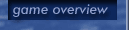
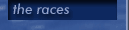

Strifeshadow Development Notes -- Issue #2
Many people have expressed interest in our reasons for creating a 2D multiplayer only game. Others have questioned it. This issue of our development notes discusses this decision and attempts to shed some light on the early stages of game development.
One of the first things we did when developing Strifeshadow was decide what the game was going to be about. This doesn't refer to the storyline or anything like that but rather what we were going to try to accomplish, and what we wanted the game to be remembered for. Now, before we reveal the mission statement for the game, allow us to assure you all that we did not sit around like a bunch of Dilbert characters brainstorming on how to phrase this mission statement. This statement merely reflects a year of refinement of our original concepts relating to the project.
Strifeshadow is a competitive Real-time Strategy game which combines great strategic and tactical depth with intricate multiplayer dynamics.
We don't mention technology in this statement because we believe that technology choices should be made only after you decide what you are trying to accomplish. Some technology choices (such as utilizing the Internet) are quite obvious, while others require more thought.
Strifeshadow's mission makes it pretty clear that we are most interested in the multiplayer aspects of the RTS genre, but it's not clear why that means our title will be ONLY multiplayer. Most of this reasoning stems from our belief that single player RTS gaming and multiplayer RTS gaming are diverging into separate genres. We feel that the best application of our time and energy is to create only one of these games at first.
In multiplayer games, a player's time is his or her most valuable resource. Frequent pausing for thought and reflection just isn't an option. Taking time to enjoy the scenery happens rarely, as players are almost entirely focused on their enemies' destruction. In terms of balance, a multiplayer RTS game cannot live without it. All races must be created equal, yet also retain their unique identities.
A single player RTS game operates at a reduced pace because the player has greater access to features such as controlling the game speed or pausing and saving the game frequently. In many cases, this makes the single player experience less intense, and more relaxed. No matter how they make use of it, the player typically has more time available for "other things" when playing in single player mode. In terms of balance, single player games are usually more fun when imbalanced. Things like overpowered hero units and boss creatures as well as overwhelming odds (in either direction) add to the enjoyment and challenge of a single player game, rather than detract from it.
What it comes down to is that we are hardly neglecting single player. We are merely completing the multiplayer game first. Assuming that the game community gives our initial effort the proper support, a single player game will follow. This single player version of Strifeshadow will retain many common elements, but will be significantly different in key areas.
These same considerations have a heavy influence on the graphics engine design. A 3D graphics engine with a camera will produce another task for the player to perform (camera management of course). In a multiplayer RTS game, this isn't acceptable. Managing a camera has nothing to do with the game itself and would slow a player's response time. Also, from a strict gameplay perspective, the player is usually best served by drawing the camera out as far as possible so as to see as much of the action as possible - at this level of zoom 3D engines typically lose most of their detail. Another option is to use a 3D engine with a fixed camera, this more or less reduces to a 2D isometric view, but requires more expensive hardware and greater processing overhead. Given the choice between that and a 2D engine, we chose a 2D isometric engine.
Given a fixed camera, there are a few advantages that a 2D engine has over a 3D one. Requirements and performance are obvious ones, but also the graphics can be more refined and detailed. Finally, smoother animations are possible for lower end machines. Its interesting to note that its really impossible to see these advantages from any screenshots we've released to this point because our shrunken screenshots obscure detail and a still screenshot is incapable of demonstrating any form of animation. Many 3D games look "better" because of the myriad of visual effects 3D hardware can create. We utilize the hardware where available, with the option to turn it off in order to increase performance.
To summarize, our design evolved in the following order. First we decided that we wanted to focus on the multiplayer aspects of the genre. Then we determined that we were best served by producing a multiplayer only title. Finally, we determined that a 2D graphics engine was the best choice in addressing our goals.
We hope that this view into our development process is helpful, and encourage you to post your thoughts and feedback on our forum.
Strifeshadow, Ethermoon Entertainment and their respective logos are trademarks of Martin Snyder